Improved rasters · five-county Florida AOI · standup 2026-10-05
The problem 01
Planted pine you can see in NAIP carries no TreeMap plot, and the ownership raster calls the same ground Non-forest. TreeMap's forest comes from LANDFIRE EVT, and NWOS's land cover from NLCD. Both are in the NLCD lineage, and they miss the same land.
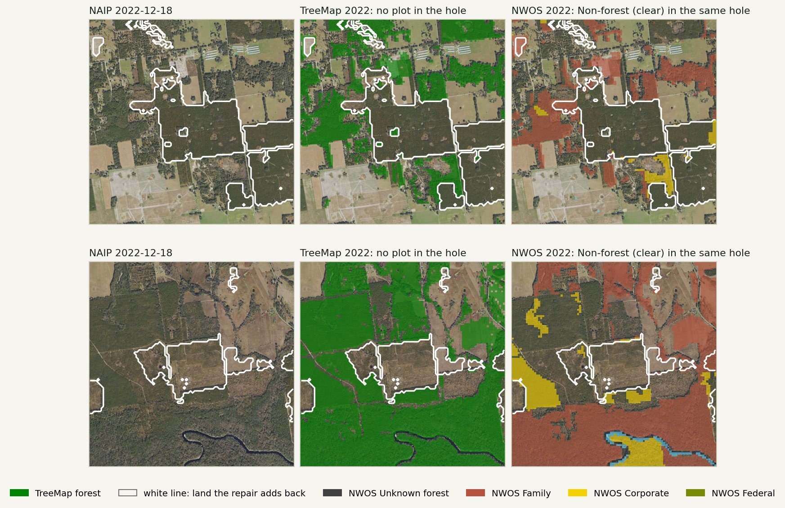
docs/improved-rasters-fl/make_figures.py · fig_holes · sites in data/chip_sites.csv
How much is missing 02
Against FIA's design-based forest-land estimate, TreeMap 2022 is 855k ac short statewide and 161k ac short in the five counties. The AOI gap is 2.12 standard errors, outside FIA's 95% interval.
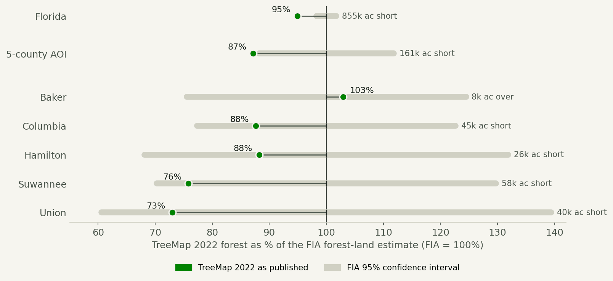
| Geography | FIA forest ac | SE | TreeMap ac | Short |
|---|---|---|---|---|
| Florida | 16,816,373 | 0.9% | 15,961,784 | 854,589 |
| 5-county AOI | 1,255,424 | 6.0% | 1,094,686 | 160,738 |
| Baker | 282,210 | 12.5% | 290,434 | −8,224 |
| Columbia | 366,897 | 11.6% | 321,473 | 45,424 |
| Hamilton | 219,170 | 16.3% | 193,396 | 25,775 |
| Suwannee | 240,362 | 15.2% | 182,243 | 58,119 |
| Union | 146,785 | 20.1% | 107,141 | 39,644 |
FIA: EVALIDator, forest land area (attribute 2), evaluation group 122022 (EVALID 122201, EXPCURR). The AOI is requested as one domain so its sampling error is correct (262 plots; Florida 3,234). A single county's interval is ±25–40%, so county comparisons show direction, not proof.
data/fia_forest_area.json · data/treemap_florida.json · data/fia_gap.csv
Three ways to find the missing forest 03
Each method proposes TreeMap holes to add back. Bookends read LANDFIRE classifications; the other two read Landsat time series through different algorithms. All three have run on the AOI. Every proposal must also land on an eligible LANDFIRE EVT 2022 class (slide 07) before the rule combines them.
LANDFIRE EVT 2016 and 2024 bracket each hole. S1 (logged 2016, tree 2024) and S2 (tree at both) are added back outright. S3/S4 (evidence at one end) pass only if an AlphaEarth-embedding classifier agrees (similarity ≥ 0.907, p ≥ 0.5). S5 (no evidence) never passes.
LANDFIRE EVT LF2016 Remap & LF2024 (USGS/USDA FS). Google Satellite Embedding V1 (AlphaEarth).
Shingo Obata's Integrated Forest Z-score detector runs through every Landsat 5/7/8 scene and dates the last stand-replacing disturbance. We accept a hole whose cut is dated 2010–2022.
Obata, Cieszewski, Bettinger, Lowe & Bernardes (2018), “Estimating the last disturbance year of forest stands in Coastal Georgia using all the available Landsat imagery with Google Earth Engine,” ForestSAT 2018. Code: ShingObt/GEE (geepipe fork).
UMD Global Forest Change records the year of canopy loss. We accept a hole with loss in 2001–2022 on ground that carried ≥ 30% canopy in 2000.
Hansen et al. (2013), “High-resolution global maps of 21st-century forest cover change,” Science 342:850–853. GFC v1.13 (2025).
Products repaired: TreeMap 2022 CONUS (Houtman et al. 2025, RDS-2025-0032) and forest ownership circa 2022 (Harris, Caputo & Butler 2025, RDS-2025-0045).
pipeline/s1_initial_state/add_back_methods.py · county_improvement.py (obata_rule, hansen_rule)
Method 1 · bookends 04
One example per stratum, from the most interior patches credited to bookends. After the EVT gate, bookends propose 84,242 ac. Of the 121,883 ac the union rule accepts (4,116 patches, 221 donor plots), 71,402 ac are credited to bookends.
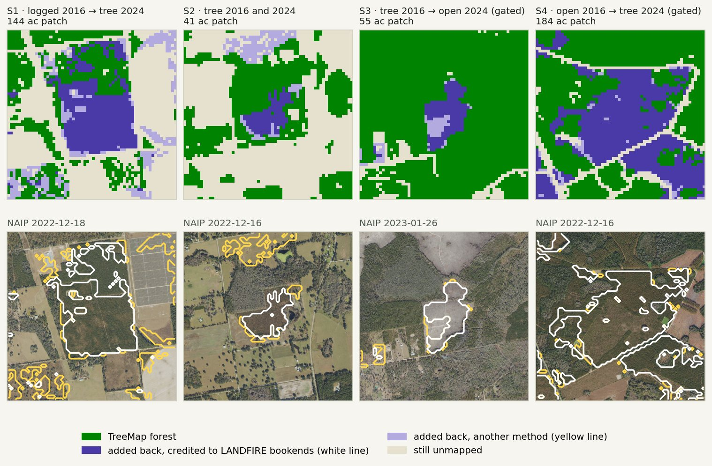
fig_bookend_chips · NAIP USDA/NAIP/DOQQ, flight closest to mid-2022 · /mnt/d/improved-rasters/aoi_5county/bookend_strata.tif
Method 2 · Landsat disturbance 05
The geepipe run for WRS-2 p17r39 (2010–2023) covers the AOI. After the gate Obata proposes 95,440 ac; 36,039 ac are credited to it, because bookends did not find them first.
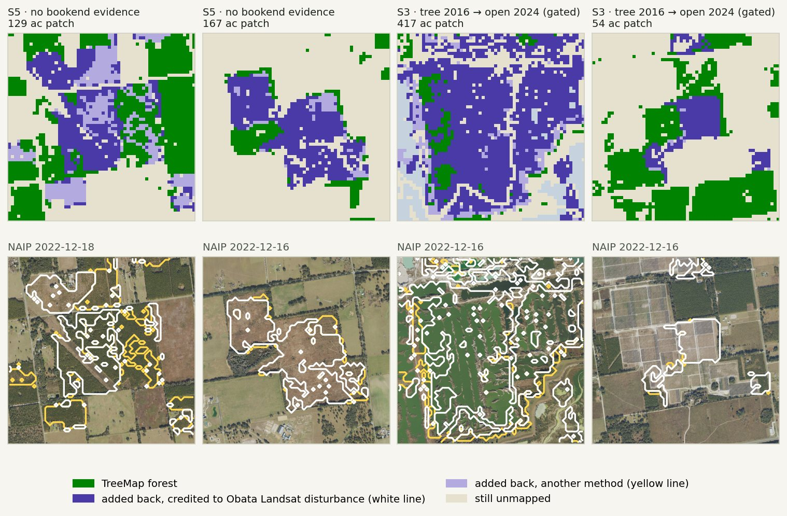
fig_method_chips · data/chip_sites.csv (use = obata_chip) · county_improvement.obata_rule
Method 3 · Hansen forest loss 06
Loss in 2001–2022 on ground with ≥ 30% canopy in 2000. After the gate Hansen proposes 120,038 ac, the most of any method; only 14,443 ac are left to credit to it once bookends and Obata are counted.
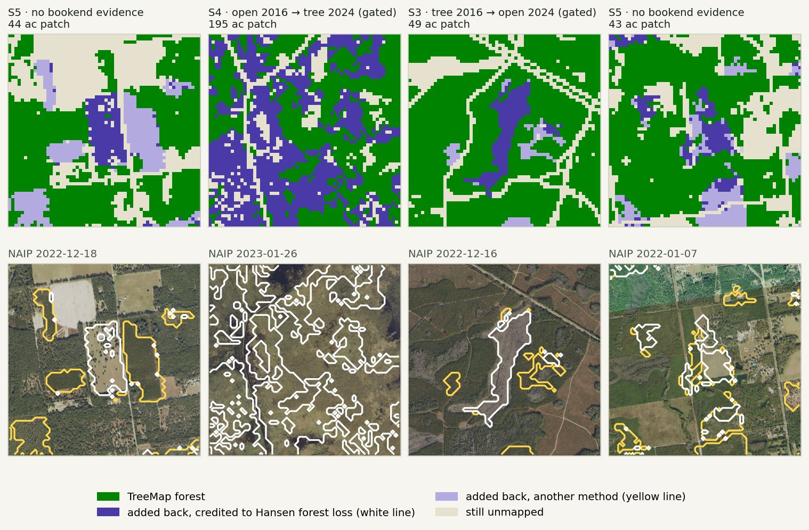
fig_method_chips · data/chip_sites.csv (use = hansen_chip) · county_improvement.hansen_rule · UMD/hansen/global_forest_change_2025_v1_13 on the TreeMap crsTransform
The EVT 2022 gate 07
The methods see disturbance, not what the ground is now. The gate reads LANDFIRE EVT 2022 and strips every method's proposals on ineligible classes before the rule and the 5 ac minimum. The default is --evt-gate evt2022_agriculture_developed_pasture_v3.
| EVT 2022 class rejected | Proposed ac |
|---|---|
| Pasture and hayland (7997, v3) | 45,415 |
| Developed-Roads (v2) | 25,240 |
| Row crop | 18,448 |
| Fallow / idle cropland | 5,706 |
| Close grown crop | 4,048 |
| Row crop – close grown crop | 2,232 |
| Developed, low / medium intensity (v2) | 2,025 |
| Other classes | 730 |
pipeline/s1_initial_state/evt_gate.py · data/evt2022_gate_rejections.csv · docs/evt2022-add-back-gate/evt_breakdown.html
Putting them together 08
Each bar is TreeMap as published plus what each method adds. Methods are credited in order of permissiveness: bookends → Obata → Hansen. A pixel found by several methods counts once, under the first.
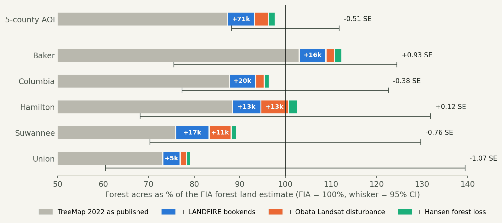
| Geography | Published ac | + Bookends | + Obata | + Hansen | Improved ac | % of FIA | vs FIA |
|---|---|---|---|---|---|---|---|
| 5-county AOI | 1,094,686 | 71,402 | 36,039 | 14,443 | 1,216,569 | 96.9% | −0.51 SE |
| Baker | 290,434 | 15,861 | 4,710 | 3,888 | 314,892 | 111.6% | +0.93 SE |
| Columbia | 321,473 | 20,185 | 5,895 | 3,191 | 350,744 | 95.6% | −0.38 SE |
| Hamilton | 193,396 | 13,187 | 12,658 | 4,043 | 223,283 | 101.9% | +0.12 SE |
| Suwannee | 182,243 | 16,971 | 11,045 | 2,342 | 212,600 | 88.4% | −0.76 SE |
| Union | 107,141 | 5,199 | 1,731 | 979 | 115,050 | 78.4% | −1.07 SE |
fig_area_vs_fia · data/area_vs_fia.csv · add_back_methods.priority_attribution
Proposed synthesis 09
One method alone can be fooled: bookends by LANDFIRE's carry-forward, Hansen by agriculture, the detector by missed cuts. Two agreeing methods are harder to fool. The rule is one flag, --rule at_least_two. It refuses to run until two methods have run, so it cannot silently add back nothing.
| Found by | Added-back ac | Any-two rule |
|---|---|---|
| All three | 37,559 | add |
| Obata + Hansen | 23,783 | add · check |
| Bookends + Hansen | 19,510 | add |
| Bookends + Obata | 10,162 | add |
| Hansen only | 14,443 | reject |
| Obata only | 12,256 | hold |
| Bookends only | 4,171 | hold |
From the union run with the v3 gate: the accepted pixels by which methods proposed them. The any-two rows are a subset of that run, not an any-two run, whose 5 ac minimum would apply to the any-two mask itself (#86).
data/agreement_cells.csv · add_back_methods.ConsensusRule · MethodMasks.combine
Five-county AOI · TreeMap 2022 · before 10
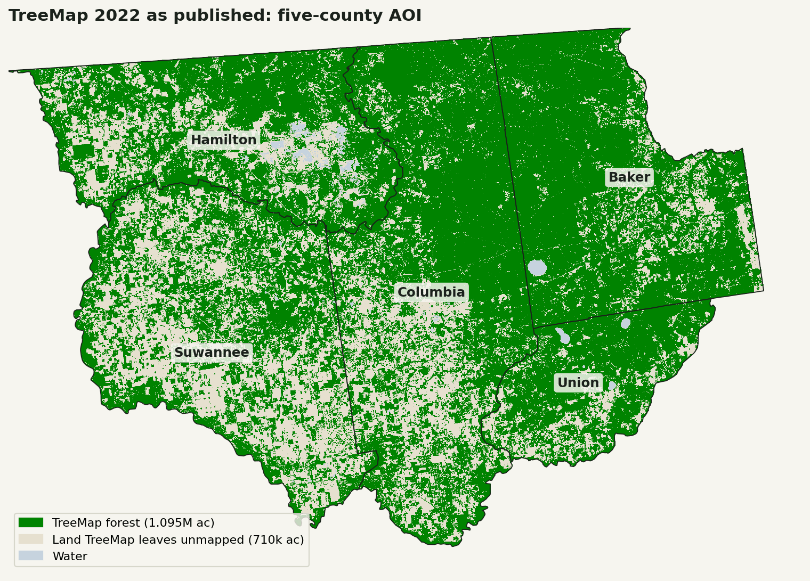
/mnt/d/improved-rasters/aoi_5county/treemap2022_published.tif · preview at 60 m, priority-downsampled
Five-county AOI · TreeMap 2022 · after 11
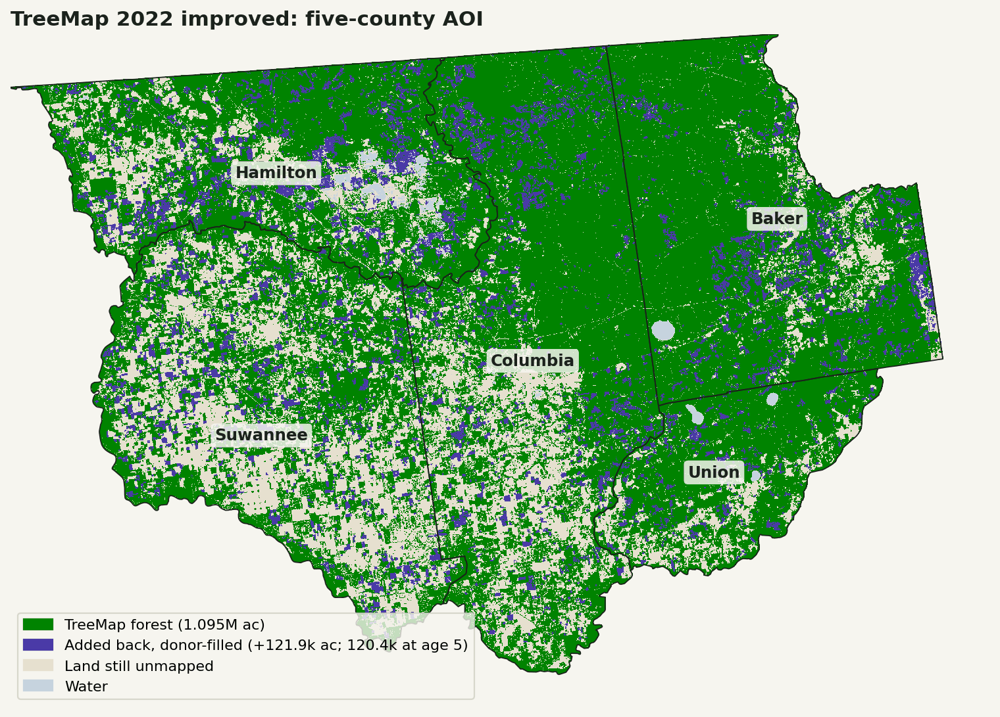
/mnt/d/improved-rasters/aoi_5county/treemap2022_improved.tif (TM_ID) · treemap2022_provenance.tif (colours)
Five-county AOI · NWOS ownership 2022 · before 12
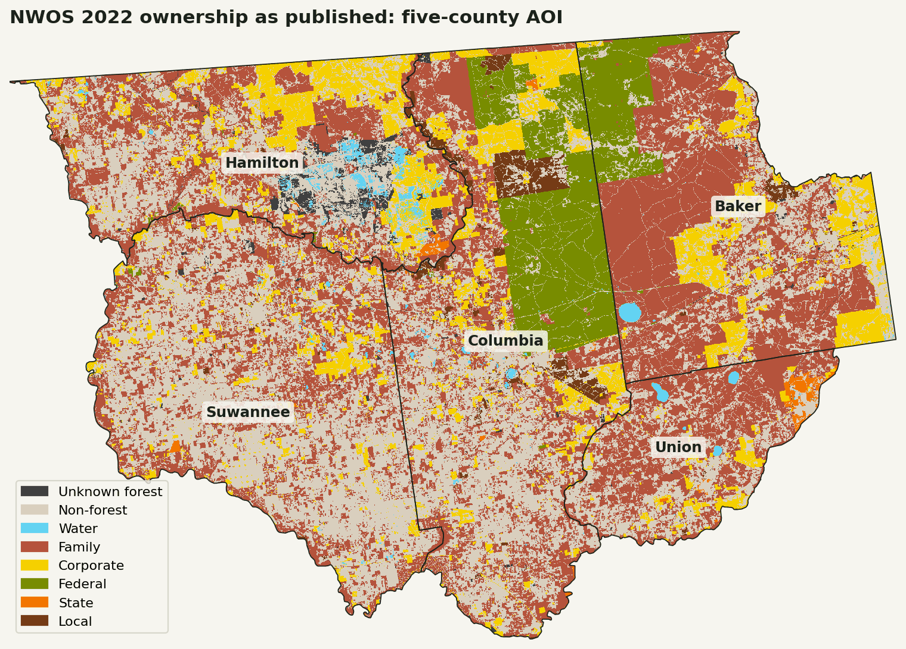
/mnt/d/improved-rasters/aoi_5county/nwos2022_published.tif · Harris 0–8 classes on the TreeMap grid
Five-county AOI · NWOS ownership 2022 · after 13
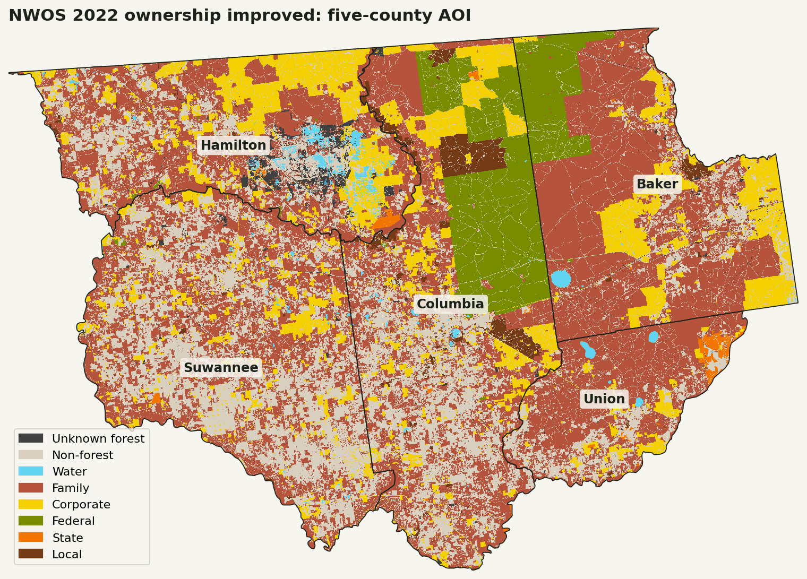
/mnt/d/improved-rasters/aoi_5county/nwos2022_improved.tif · nwos2022_provenance.tif
The ownership repair 14
| Owner class, on improved forest | Before ac | After ac | Change |
|---|---|---|---|
| Family | 589,123 | 741,599 | +152,476 |
| Corporate | 198,700 | 256,259 | +57,559 |
| Federal | 143,909 | 153,589 | +9,680 |
| Local | 28,539 | 35,750 | +7,211 |
| State | 8,736 | 10,304 | +1,568 |
| Unknown forest | 18,693 | 19,068 | +375 |
| Non-forest / water | 228,869 | 0 | −228,869 |
Known owners and NWOS's own Unknown forest never change. The scope is a flag: --ownership-scope added_back would re-own only the 75,532 ac of added-back land and leave the published-forest gap alone.
data/ownership.csv · data/ownership_summary.json · ownership_repair.repair_ownership · OwnershipRepairScope
Initialization 15
A recovered pixel needs a tree list so FVS can grow it, and an owner so a regime can be assigned. The options:
Spatial nearest neighbour: the plot most common around the patch. Cheap, and keeps the local species mix.
Feature-space nearest neighbour: the nearest plot whose AlphaEarth embedding looks alike (cosine ≥ 0.9 within 210 m, the Union County prototype).
Stratum-matched donor: an S1 (logged 2016 → regrowth) patch takes a young-pine plot, not the mature stand beside it.
Prescribed establishment: an owner-class planting (for example corporate slash pine at age 0), as for clearcuts.
chosen Scaled nearest neighbour: the spatial neighbour gives the forest type and species mix; an FIA age-5 profile of that forest type gives the density and tree size. Standing forest (S2) keeps the neighbour as is. Slide 16.
Nearest known owner: the class of the nearest NWOS owner pixel.
Parcel majority: the dominant owner class among known-owner pixels in the same parcel. The Florida parcel layer is on the drive.
Modal neighbourhood: the most common owner in a ring around the patch, not the single nearest pixel.
Leave Unknown forest: honest, but unknown forest gets no regime.
What we do: scaled nearest-neighbour imputation 16
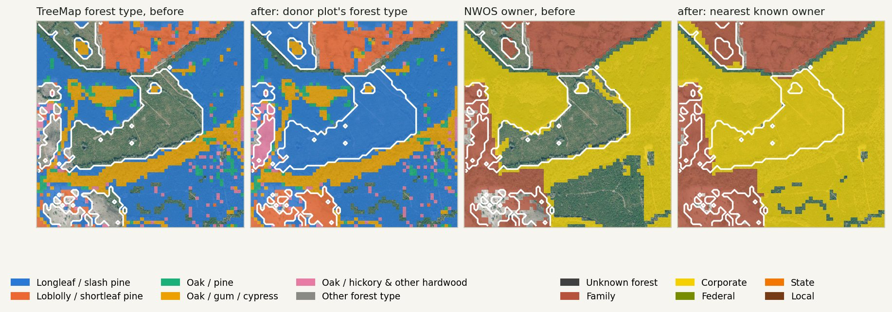
Each accepted patch is 8-connected. It takes the modal TreeMap plot in the first ring around it that has any (3, 7, 15, 31, then 63 px), so one patch gets one plot and becomes one stand. The donor gives the forest type and species mix.
A cut or regrowing patch (S1, S3, S4, S5: 120,430 ac) takes its density and tree size from the age-5 profile of that forest type below. Each donor species gets its share of the donor's live TPA. The raster marks these pixels provenance 4. Standing forest (S2: 1,453 ac) keeps the donor's own tree rows, provenance 2. PLT_CN stays a string.
| Age 5, FIA AL/FL/GA | TPA | DBH in | HT ft | Plots |
|---|---|---|---|---|
| Longleaf / slash pine | 381 | 2.94 | 15.7 | 532 |
| Loblolly / shortleaf pine | 471 | 2.75 | 16.7 | 1,203 |
| Oak / pine | 332 | 2.74 | 17.8 | 452 |
| Oak / gum / cypress | 237 | 2.96 | 20.0 | 174 |
| Other hardwood | 279 | 3.00 | 20.1 | 824 |
| Other (3 plots: uses all plots) | 375 | 2.84 | 17.7 | 3,188 |
STDAGE 3–7, single-condition national-design plots, 1997–2024. TPA is the median plot's live trees (DIA ≥ 1 in); DBH is the TPA-weighted quadratic mean. Seedlings are measured but not added: TreeMap's tree lists carry none.
Each forest pixel NWOS calls Non-forest takes the nearest known-owner pixel (Euclidean distance transform, up to 63 px). A patch can split between two owners along the midline between them, just as real ownership boundaries cut stands.
impute_establishment.scaled_establishment_lists · config/establishment.yaml · config/young_stand_profiles.yaml · data/aoi_summary.json (establishment.live_effect) · ownership_repair.repair_ownership · fig_imputation
Conclusion 17
uv run python -m pipeline.s1_initial_state.young_stand_profiles # only when FIA changes; about 4 min uv run python -m pipeline.s1_initial_state.county_improvement --obata-tif <lastDist…tif> --hansen-tif <hansen_aoi.tif> # --evt-gate defaults to v3 uv run python -m pipeline.s1_initial_state.add_back_stand_age <out-root>/aoi_5county --obata-tif … --hansen-tif … uv run python docs/improved-rasters-fl/make_figures.py # --run-root / --inputs-root without /mnt/d # rasters: /mnt/d/improved-rasters/counties/<fips>_<name>/ and /mnt/d/improved-rasters/aoi_5county/ (COG)
data/aoi_summary.json (evt_gate, added_back_acres_by_mode, establishment.live_effect) · data/add_back_stand_age.csv · docs/adr/0002-scaled-nearest-neighbour-establishment.md · docs/adr/0003-dated-stand-age-and-young-plots.md